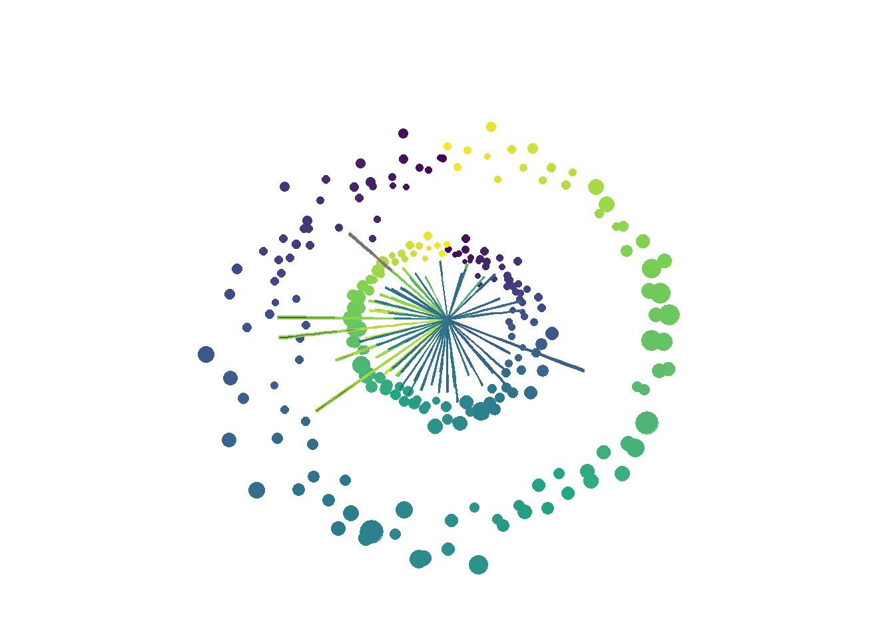

#using a phytoplankton monitoring time series from Morro Bay
hab <- read.csv("MBF_upload.csv")
#modifying and overlaying data on a single plot
hab_spiral <- hab |>
ggplot() +
geom_point(aes(Day.of.Year..1.365.,
log10(Total.Phytoplankton..cells.L.),
colour = Day.of.Year..1.365.,
size = Avg.Chloro..mg.m3./2),
show.legend = FALSE) +
geom_point(aes(abs(366-Day.of.Year..1.365.),
log(Total.Phytoplankton..cells.L.),
colour = Day.of.Year..1.365.,
size = Avg.Chloro..mg.m3.),
show.legend = FALSE) +
geom_bar(aes(Day.of.Year..1.365.,
log10(Akashiwo.sanguinea..cells.L.),
colour = Temp..deg.C.*20),
stat = "identity",
show.legend = FALSE) +
geom_bar(aes(Day.of.Year..1.365.,
log10(Pseudo.nitzschia.seriata.group..cells.L.),
colour = Temp..deg.C.*10),
stat = "identity",
show.legend = FALSE) +
coord_polar() +
theme_void() +
scale_color_viridis_c()
hab_spiral